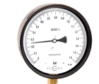
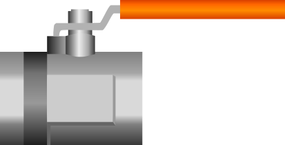
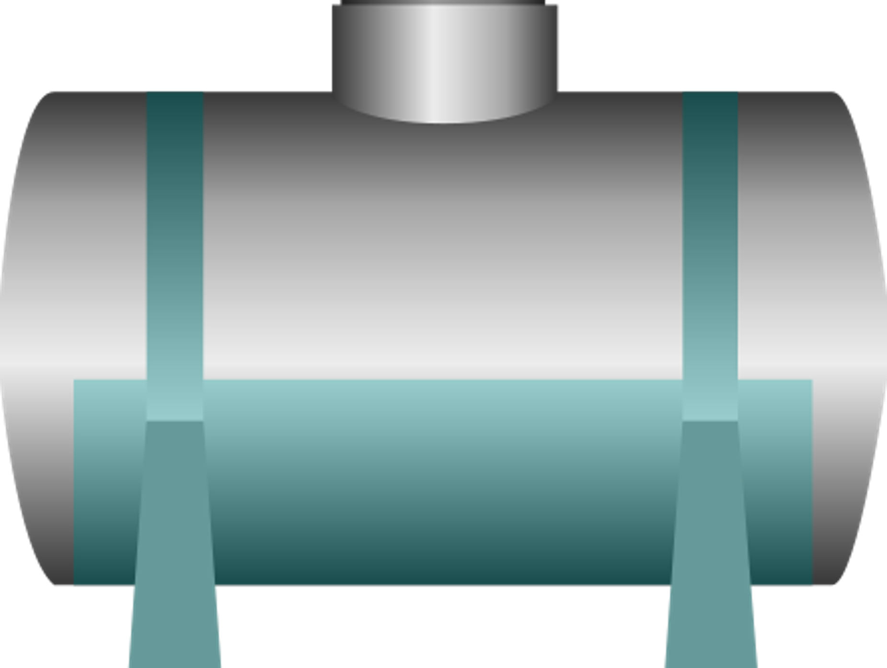
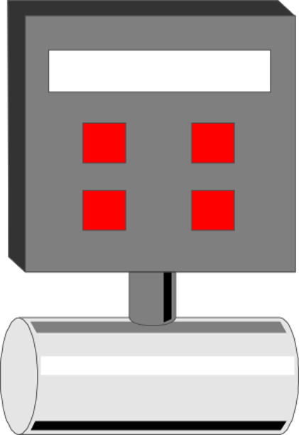
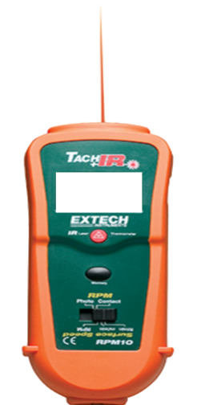
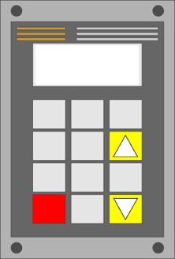
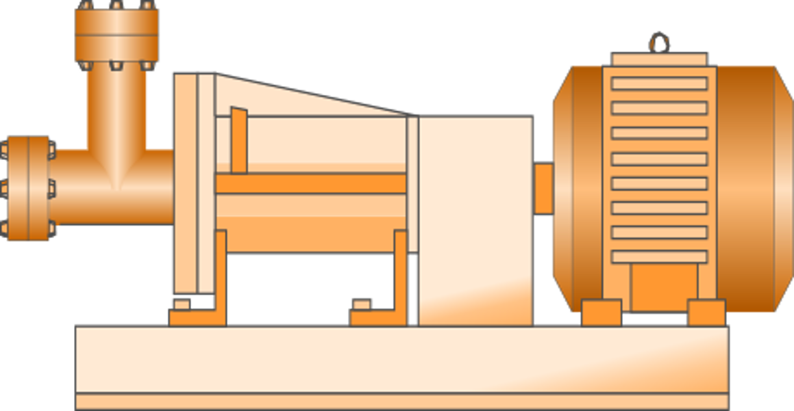

Laboratorio de Fluidos: VARIADOR DE FRECUENCIA
Banco de pruebas hidráulico
Ingresa el nombre del estudiante


0,00



3600
1
BOMBA CENTRÍFUGAPresión de descarga0,00 bar
0,00 mca
Caudal0,00 l/s
Tacómetro0 rpm
Apertura0 %
VARIADOR DE FRECUENCIA:H = Aα² + BαQ + CQ²